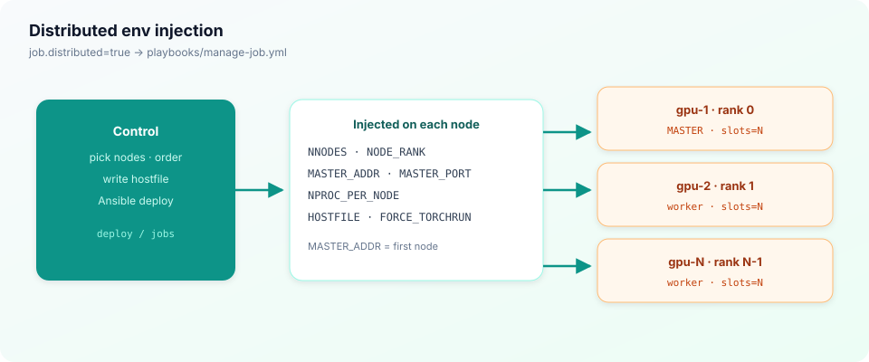
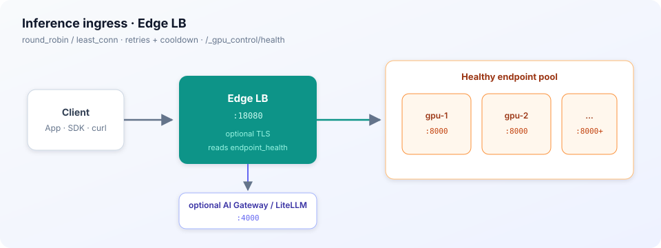

多节点 GPU 控制面
ComputeDeck
一台 Control，管住整甲板的卡、任务与入口。
Web · CLI · MCP，同一套运维语义。
0MCP 工具
0推荐 Job 模板
0入口方式
向下滚动 · ↓ / 空格 · 右侧圆点 · 可开自动播放
为什么需要
从「群聊 + nvidia-smi」到控制面
之前
- 占用靠口头同步
- 启停脚本各写各的
- 换机就改路径端口
- Agent 没有统一契约
- 入口与在服卡对不上
→
有了 ComputeDeck
- 租约 / 队列可记账
- Job JSON 插件化启停
${paths.*}适配异构目录- OpenAPI +
gc_*MCP - Edge 健康转发 + 冷却重试
能力全景
一甲板，全链路
从看见卡、占住卡、跑起任务，到对外入口与 Agent 接入——都在同一套配置与状态里。
看得见
池子、占用、入口一眼排开
看板聚焦总览：健康环、节点条带、队列与租约摘要。腾空、隔离、探测 API 有明确动作，不靠猜。
- GPU 快照刷新与主机指标
free停 Job + 杀进程 + 释租约cordon隔离调度，部署默认识别
78
忙12
闲20
租约3
deepseek-1 · 空闲 2/4 · sft 占用中
Job 插件
装模板，就能启停
内置通用壳；推荐包一键装齐 vLLM、微调、Ray、Docker。多机训练自动注入 NNODES / MASTER_ADDR。
gpu-control jobs install --recommended
推理 vllm-serve · http-serve · vllm-docker
训练 train-job · llamafactory · deepspeed · torchrun
分布式 ray-cluster
通用 shell-job · docker-job

配置驱动
换集群，主要改 JSON
真实场景只在 config/local/。路径、SSH、标签、默认 Job、unit_gpus 写清楚，框架保持中性可迁移。
// nodes.json · defaults.paths
{
"python": "/opt/conda/bin/python",
"model_root": "/data/models",
"workdir": "/data/jobs",
"cache": "/data/cache"
}
// Job 里引用
"script": "${paths.repo}/manage.py"
"python": "${paths.python}"统一入口
健康上游，失败换路
内置 Edge：round_robin / least-conn、连接失败重试、上游冷却。可叠加 nginx 或 LiteLLM；策略词汇表分清「集群标签 ≠ 入口算法」。
gateway ensure一键规整- 端点健康探测与客户端 LB 片段
- TLS / 对外 URL 可配
ClientEdgeHealthyGPU API

模型与工具栈
拉取、校验、装栈一条链
HF / ModelScope 拉取与登记；deps / check / verify。训练栈、推理栈按 bundle 探测与安装到节点 Python。
train-stack
LLaMA-Factory · DeepSpeed · Accelerate · PEFT
serve-stack
vLLM · openai 客户端
models
pull · register · verify.expect_files
Agent 友好
人机共用一条能力面
浏览器、CLI、MCP 读同一份目录。Cursor 等用 gc_*；脚本用 Bearer；人用看板——语义不分裂。
mcp · gc_*
可靠性
记账可讲清，漂移看得见
leases / queue / cordon 跨进程锁写入，CLI 与 UI 不互相踩。
异主租约部署默认拒绝；--force 才覆盖。崩溃不对账时 diagnose 会喊。
按 Job 巡检 status，不健康则 restart + wait，隔离节点自动跳过。
密码 / OIDC · Session · Bearer Token；生产默认不裸奔。
内置 xterm，内网也能开 SSH PTY，不依赖外网 CDN。
AGPL-3.0：网络提供修改版须给源码，控制面改造可审计。
开源 · AGPL-3.0
把甲板铺到你的机房
克隆 · 写好 config/local · jobs install --recommended · 开 UI。
git clone https://github.com/AlexanderJ-Carter/ComputeDeck.git
cd ComputeDeck
uv venv .venv && uv pip install -r requirements.txt
gpu-control doctor && gpu-control ui --background产品名 ComputeDeck · 命令行 gpu-control